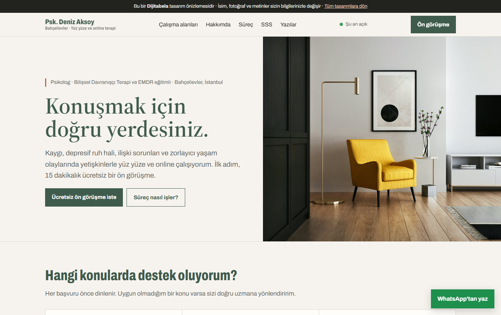
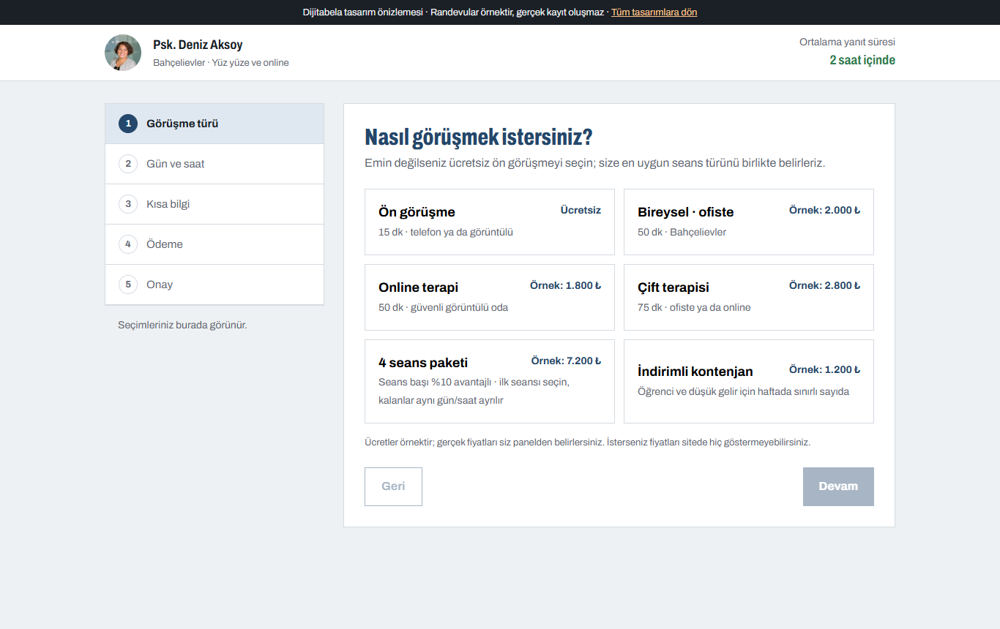
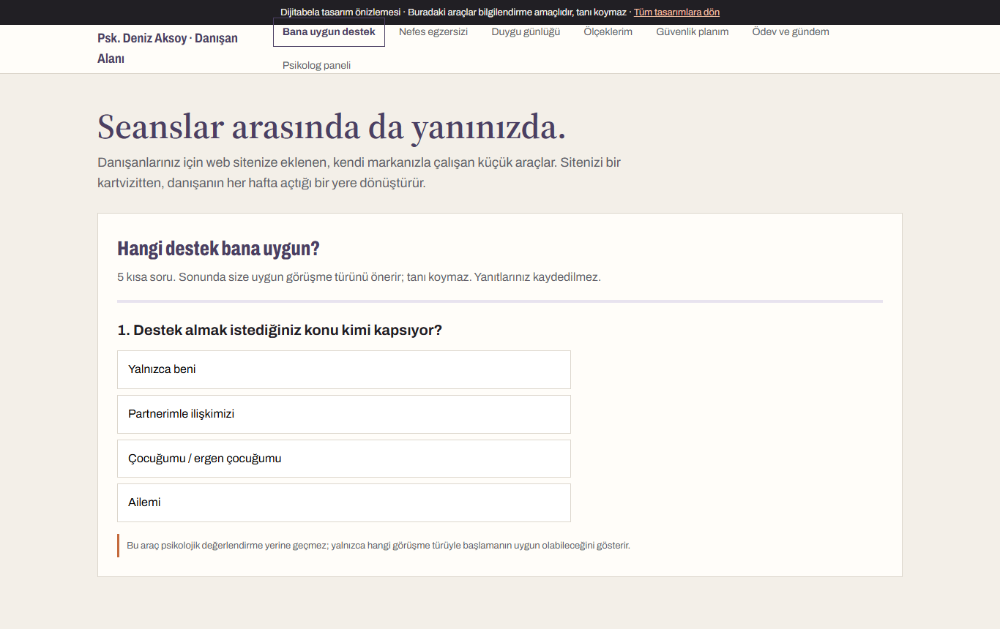

Üç tasarım
Her biri ayrı bir yaklaşım. İstediğiniz özellikleri birinden diğerine taşıyabiliriz.

1 · Sakin klinik
Güven veren, sade, sıcak tonlu kurumsal site. Basit ve uygun fiyatlı başlangıç için ideal.
- Çalışma alanları, hakkımda, eğitimler
- "Süreç nasıl işler?" 3 adım + seans tablosu
- Gizlilik odaklı SSS
- Ücretsiz ön görüşme formu (KVKK onaylı)
- "Şu an açık/kapalı" rozeti, harita, WhatsApp
- Anonim "Psikoloğa sor" kutusu → SSS ve blog içeriği
- İndirimli seans kontenjanı (öğrenci / düşük gelir)
- Blog: Google'da bulunmanızı sağlar

2 · Akıllı randevu
Danışan telefon açmadan, boş saatinizi görüp randevusunu kendisi alır.
- Seans türü → gün → saat → kısa bilgi → onay
- Dolu saatler kapalı, çift rezervasyon yok
- İsteğe bağlı %30 kapora (iyzico/PayTR)
- Otomatik WhatsApp hatırlatma (24 sa + 2 sa)
- Takvime ekle + online seans odası
- Gizli hatırlatma modu: mesajda "terapi" kelimesi geçmez
- Bekleme listesi: iptal olan saat ilk sıradakine
- 4 seanslık paket, bağlantı koparsa telefonla devam

3 · Danışan alanı
Sitenizi danışanın her hafta açtığı bir yere dönüştürür. Türkiye'de çok az psikologda var.
- "Hangi destek bana uygun?" 5 soruluk yönlendirici
- Animasyonlu nefes egzersizi (3 ritim)
- Duygu günlüğü + haftalık grafik
- PHQ-9 / GAD-7 ölçek takibi + ilerleme grafiği
- Kişisel güvenlik planı (kriz anı için)
- Seans gündemi notu, ödevler, kaynaklar
- Psikolog paneli: randevu, katılım, ödeme
- Acil durum yönlendirmesi her sayfada
Psikolog sitenize ekleyebileceğimiz her şey
İhtiyacınız olanı seçin; gerisini sonradan ekleriz. Hepsi sizin markanızla ve sizin alan adınızda çalışır.
Güven ve tanıtım
- Unvan ve eğitimlerin doğru sunumuLisans, yüksek lisans, terapi eğitimleri, süpervizyon ve üyelikler net bir zaman çizelgesinde.
- Çalışma alanları sayfalarıKaygı, depresyon, çift, travma, yas, çocuk-ergen gibi her alan için ayrı sayfa: hem danışana bilgi hem Google'da görünürlük.
- Yöntem anlatımıBDT, EMDR, şema terapi gibi yaklaşımları sade dille açıklayan bölüm.
- Ofis fotoğrafları ve 360° bekleme alanıGelmeden önce mekânı görmek ilk adımın kaygısını azaltır.
- Video tanışma60 saniyelik "merhaba" videosu; danışan sizi seansa gelmeden tanır.
Randevu ve ödeme
- Online randevu takvimiÇalışma saatlerinizi siz belirlersiniz; Google Takvim ile iki yönlü eşleşir.
- Ücretsiz ön görüşme akışı15 dakikalık tanışma için ayrı, kısa bir randevu türü.
- Kapora ve online ödemeGelmeyen danışan kaybını azaltır. İsterseniz tamamen kapalı tutulur.
- Otomatik hatırlatma ve ertelemeWhatsApp/SMS hatırlatma; danışan "erteleme" yazınca yeni saat önerilir.
- Paket seans ve bekleme listesi4'lü/8'li paket satışı; dolu haftalarda boşalan saat bekleme listesine haber verilir.
Online terapi
- Güvenli görüntülü görüşme odasıUygulama indirmeden tarayıcıdan açılır; oda yalnızca ilgili danışana açıktır.
- Kamera-mikrofon testi ve bekleme salonuSeanstan önce teknik sorun çözülür, siz hazır olduğunuzda içeri alırsınız.
- Yurt dışındaki danışanlar için saat dilimiRandevu saati danışanın kendi saatinde gösterilir; isterseniz İngilizce sayfa.
Danışan deneyimi
- "Hangi destek bana uygun?" yönlendiriciTanı koymadan doğru görüşme türüne yönlendirir; kararsız adayı randevuya taşır.
- Nefes ve gevşeme araçlarıKutu nefesi, 4-7-8, beden taraması ses kaydı.
- Duygu günlüğü ve haftalık grafikSeansta "bu hafta nasıldı?" sorusuna verilerle bakarsınız.
- Ödev ve çalışma kâğıtlarıSeans sonrası görev atama, danışana özel kaynak paylaşımı.
- Danışan girişiRandevular, ödevler, faturalar ve paylaşılan dosyalar tek yerde.
Psikolog paneli
- Günlük ajanda ve danışan kartlarıRumuzla tutulan kayıtlar, seans geçmişi, şifreli notlar.
- Gelir ve katılım raporuAylık seans sayısı, iptal oranı, kapora/ödeme takibi.
- Fatura / e-arşiv entegrasyonuİsterseniz seans sonrası otomatik e-arşiv fatura.
Google'da bulunmak
- Google İşletme Profili kurulumu"Bahçelievler psikolog" aramasında harita sonuçlarına girmeniz için.
- Yerel SEO ve hızMobilde 2 saniyenin altında açılış, doğru başlıklar, yapılandırılmış veri.
- Blog altyapısı + ilk 3 yazıDanışanların gerçekten aradığı sorulara yanıt veren yazılar.
- Instagram içerik bağlantısıSitedeki yazılar Instagram gönderisine dönüşebilir.
Etik ve gizlilik: baştan doğru kurgu
- KVKK: Sağlık bilgisi özel nitelikli veridir. Formlarda yalnızca gerekli bilgi istenir, açık rıza ayrı alınır, aydınlatma metni hazır gelir.
- Danışan yorumu ve "garanti" ifadesi yok: Meslek etiğine uygun olarak sitede danışan yorumu, önce-sonra iddiası ya da sonuç vaadi kullanılmaz.
- Unvan doğruluğu: Unvanınız ve yetkinlikleriniz belgenizde yazdığı gibi kullanılır.
- Acil durum yönlendirmesi: Her sayfada 112 bilgisi; form ve araçların acil durumlar için takip edilmediği açıkça yazılır.
- Güvenlik: SSL, şifreli notlar, danışan adları panelde rumuzla.
Karşılaştırma
| Özellik | 1 · Sakin klinik | 2 · Akıllı randevu | 3 · Danışan alanı |
|---|---|---|---|
| Kurumsal tanıtım, alanlar, hakkımda, SSS | ✓ | ✓ | ✓ |
| Ön görüşme formu + WhatsApp | ✓ | ✓ | ✓ |
| Google İşletme + yerel SEO | ✓ | ✓ | ✓ |
| Online randevu takvimi + hatırlatma | – | ✓ | ✓ |
| Kapora / online ödeme | – | ✓ | ✓ |
| Online seans odası | – | ✓ | ✓ |
| Yönlendirici, nefes, duygu günlüğü, ödev | – | – | ✓ |
| Psikolog paneli + raporlar | – | Temel | ✓ |
Paketler
Fiyatlar Armut teklifimizde. Alan adı ve ilk yıl barındırma her pakete dahil; ödeme iş bitiminde, siteyi teslim aldıktan sonra.
Başlangıç
Tasarım 1 · basit ve hızlı
- Tek sayfa kurumsal site
- Ön görüşme formu + WhatsApp
- Google İşletme Profili kurulumu
- Alan adı + 1 yıl barındırma
- 7 günde yayında
Randevulu
Tasarım 1 + 2
- Başlangıç paketindeki her şey
- Online randevu takvimi
- WhatsApp hatırlatma
- Online seans odası
- 3 blog yazısı + yerel SEO
Tam pratik
Tasarım 1 + 2 + 3
- Randevulu paketteki her şey
- Kapora / online ödeme
- Danışan alanı ve araçlar
- Psikolog paneli
- 3 ay ücretsiz destek
7 günde yayında
GÜN 110 dk görüşme, tasarım seçimi, bilgilerinizin alınması
GÜN 2-4Metinler, fotoğraflar, randevu saatleri; önizleme linki
GÜN 5-6Düzeltmeler, KVKK metni, Google İşletme Profili
GÜN 7Alan adınızda yayında + kısa kullanım eğitimi